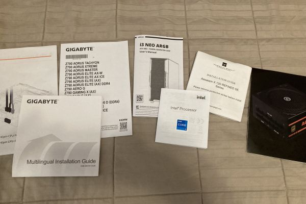

Building A Computer
The reasons to upgrade my PC were piling on quickly in early 2024, not least among them was the PC had endured almost a decade of my undivided attention. A 7th generation Intel CPU from 2016 was set on an even older motherboard at the end of its rope, and the GTX 1060 graphics card was failing to render anything above 2 dimensions. This meant designing models in 3D programs was impossible and most of the newest games wouldn't even load the start screen. It was time for a massive overhaul, so I began doing as much research as I could in preparation for my first full computer build.

Steeping myself in the latest computer hardware specs gave me the hardware bug. I plotted for weeks on how to best stretch my budget, but hardware fever made it difficult to think straight. The plan was to reduce the bottlenecking of a new 40-series NVidia GPU. From there I could narrow down parts by compatibility and necessity. I eventually settled on a 13th generation Intel chip, 32 GB of DDR5 RAM, and a motherboard that would support future upgrades. At this point I had all but betrayed my budget and attempted to slide under with an NVMe SSD (another big upgrade from my old SATA SSD), a reasonable power supply and enough cheap fans to cool it all off. Finally, I picked out a cheap ATX case (with a mandatory glass panel necessary for admiring the components). Now I just had to order these parts and hope that they were all actually compatible and in one piece. Not even the late hit by sales tax couldn ruin my excitement.
As the parts came in day by day I spent my time reviewing instructional videos on every aspect of the assembly. This seemed simple enough, but horror stories about bent CPU pins and shorting the motherboard had this first-timer nervous. Once I had all the components in-hand, I worked up the courage to begin assembly and laid everything out. ChatGPT quickly became my friend when I thought I might be forgetting something. It had an answer to every tiny concern that plagued me through this process, but still, I carefully read through every one of the manuals to be absolutely sure.
{kind=link}
{kind=link}
The operation began with the most nerve-wracking part: installing the CPU. I leveled the motherboard on top of its box and gathered the unboxed parts. Before I knew it, the CPU was slotted in, its lever secured and its heatsink bolted onto the applied thermal paste. A wave of relief crashed over me as I finally took a breath. I continued onto each motherboard parts carefully and systematically, installing the SSD the two RAM modules and fans. I then prepared the empty case with standoff screws and mounted the motherboard tightly. Installing each new part, including the GPU, the power supply and the front panel, I spirited away the bundled mess of wires to the hidden part of the case. The case was complete and I was officially in hardware heaven. There was one thing left to do.
I connected the GPU to my monitor and pushed the on switch with anticipation. A glow beamed from the case fans as they spun to life. The computer blurted out its first POST beep and the screen prompted me for setup. I flashed its OS from my installation media and was over the moon as I interrogated its performance. The machine has since been my trusty workhorse as I challenged it with new tools and toys. To my amazement the preparation had largely paid off with no compatibility hang-ups. Luckily, I came across Intel's instability bug affecting their 13th and 14th generation processors and promptly applied the critical BIOS update.

{kind=link}
Overall, an overwhelming success! There was so much to learn from the building process and I finally felt comfortable with all of the parts of the PC's hardware. It has proven extra useful for troubleshooting mine or my family's computers since. I am already looking forward to building my next PC, but for now this one handles everything I can throw at it.